インスタ運用が劇的にラクになる魔法の公式アプリ「Edits」 — Jun 2026
Day 04「公式アプリ Edits 完全攻略」
インスタ運用が劇的にラクになる魔法の公式アプリ
公式アプリ「Edits」が他の編集アプリより優れている理由を説明できる
テンプレート・AI自動テロップ・テレプロンプターの3大編集チートを使える
自分のリールの「最初の台本」を書き、Editsで撮影準備ができる状態にする
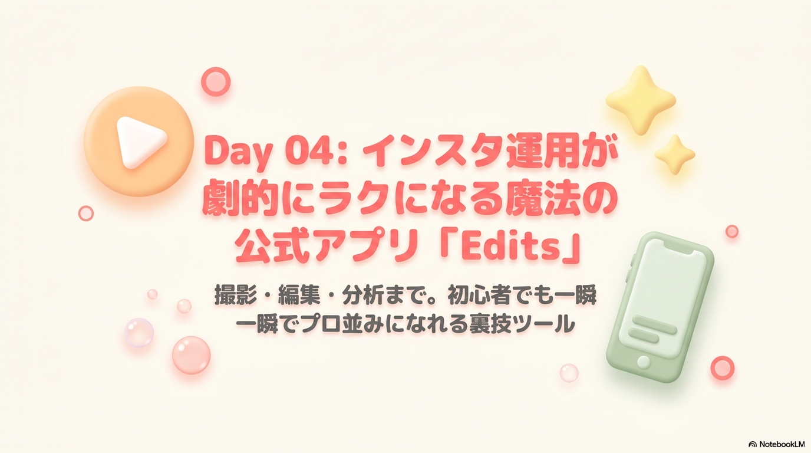
これまでのリール制作：カメラアプリで撮影 → 編集アプリで仕上げ → インスタで投稿 → インサイトで分析 とアプリを4往復していました。
Editsならこの全工程が1アプリで完結：撮影・編集・投稿・分析のサイクルをアプリ内で一気通貫。
しかも全機能が完全無料。高機能な有料プランは存在しない。
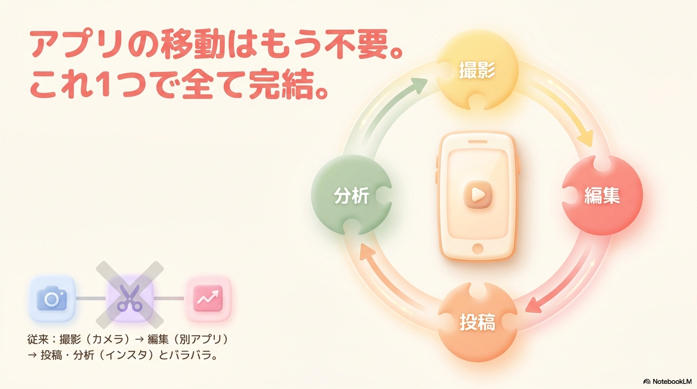
他社無料アプリとの3大違い：
「インスタで伸ばすための動画」を作るなら、インスタ公式が設計したEditsが圧倒的に有利です。
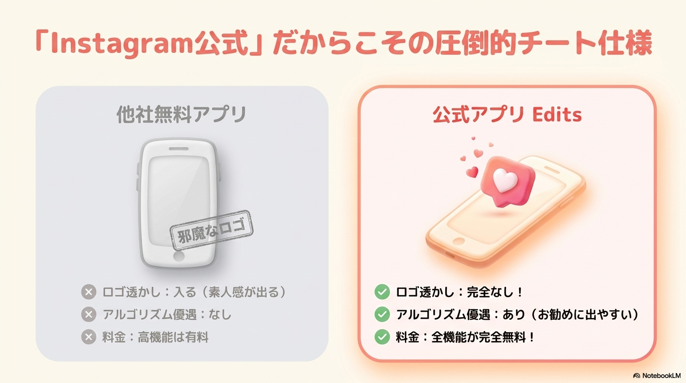
伸びるリールを作る最大の近道は「伸びているリールを真似すること」です。
テンプレート機能：インスタ内でバズっているリールの「カット割り・テロップ表示タイミング」をそのままテンプレートとして使用可能。
有名シェフのレシピをレンジで温めるだけ。ゼロから考える必要なし。時短なのにクオリティは最高水準。
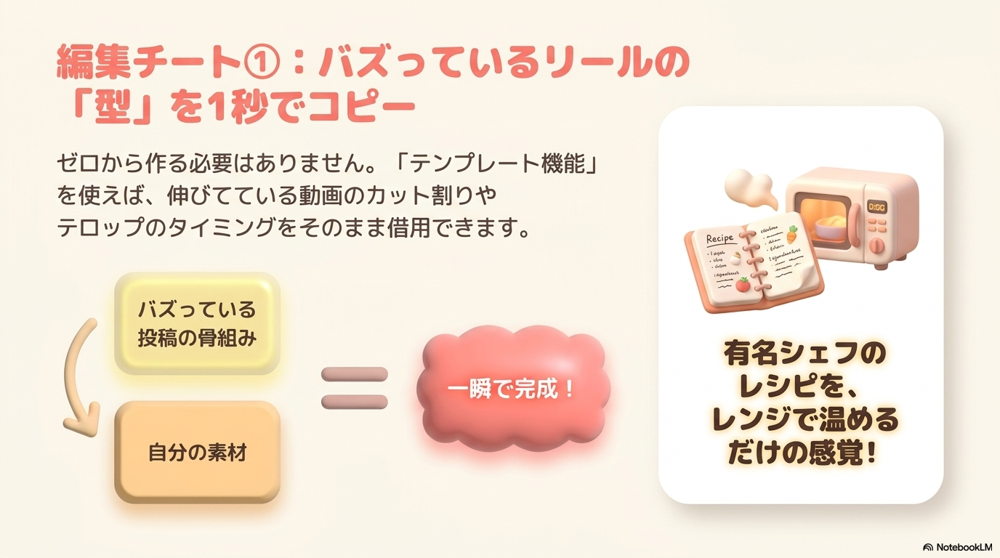
テロップを1文字ずつ手打ちする作業は時間がかかり、しかも地味につらい作業です。
AIキャプション機能：動画内の音声をAIが自動で認識し、話すタイミングに合わせたテロップを自動生成します。
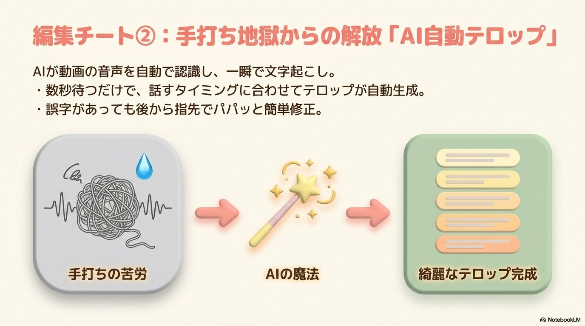
肌補正（ビューティーフィルター）：撮影ボタン横のキラキラアイコンをタップするだけで肌を綺麗に補正。別途フィルターアプリが不要。
音源を流しながら撮影：Edits内でトレンドの音源（BGM）を流しながら撮影できます。
4K 60fps 設定：撮影画面から「4K・フレームレート60」に変更するだけで最高画質での撮影が可能。
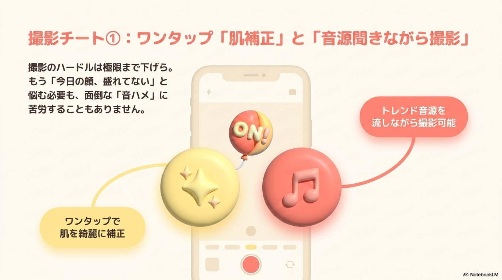
トーク系リールの最大の難関：「台本を覚える」作業。忘れるたびに撮り直し、30秒の動画に30分かかることも。
テレプロンプター機能（カンペ機能）：事前に書いた台本・撮影手順を画面に表示しながら撮影できます。
「何を撮ればいいか」が画面を見るだけで分かるので、段取りを忘れて迷う時間がゼロになります。
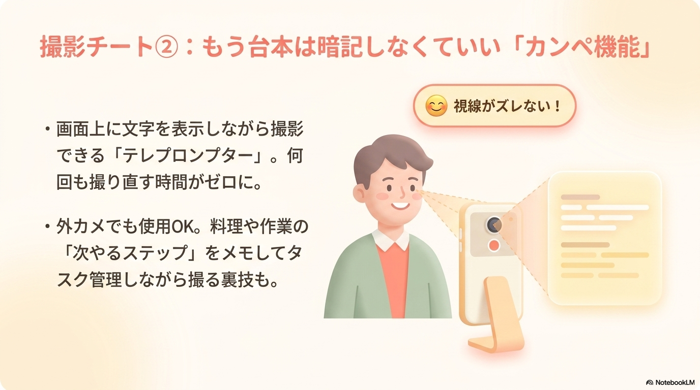
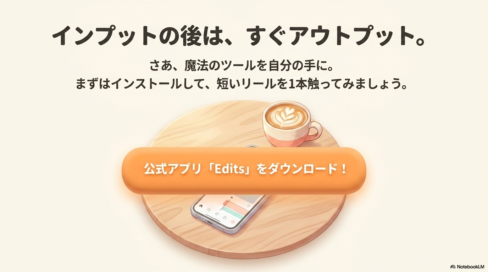
【実習】 スマホでEditsを開きながら、以下3項目をメモしましょう。
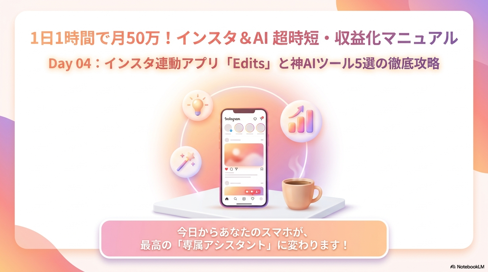
後半では3本柱を完全攻略します：
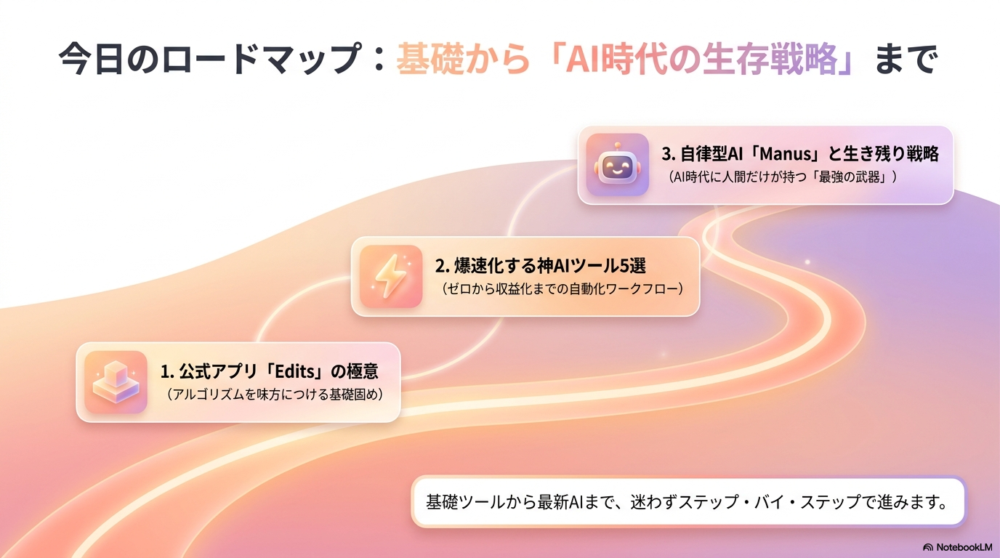
前半で学んだ内容を一言で確認しよう：
Edits1つで「コンテンツ制作から分析まで」の全サイクルが完結します。
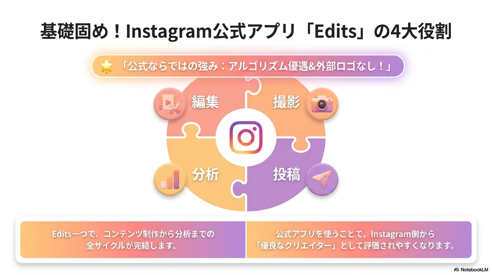
従来の弱点：「詳細はプロフィールへ」→ プロフィール移動 → スクロール → 投稿探す → タップ、と工程が多く途中で離脱されます。
Editsのリンク機能（2026年1月15日アップデート）：リール画面に直接、別リールやプロフィールへのリンクボタンを配置できます。
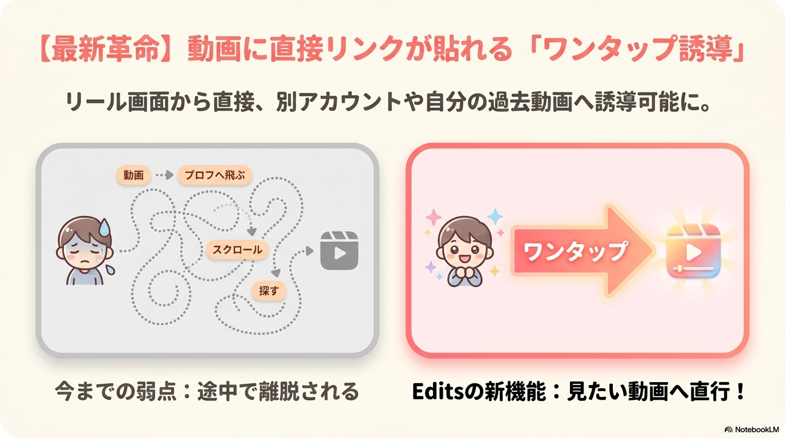
トライアルリール活用法：フォロワー以外にのみ配信するトライアルリールをリンク先に設定することで、フィードを汚さずにYouTubeの「限定公開」のような導線を作れます。疑似メニューや選択式ゲームの構築も可能です。
UI被り警告ガイド：リンクを端に寄せすぎると、インスタ公式の「いいね」「コメント」「キャプション」ボタンと被ってタップ不能になります。Editsは衝突エリアを黄色いガイド線で可視化してくれるため、安全な位置への配置が迷わずできます。
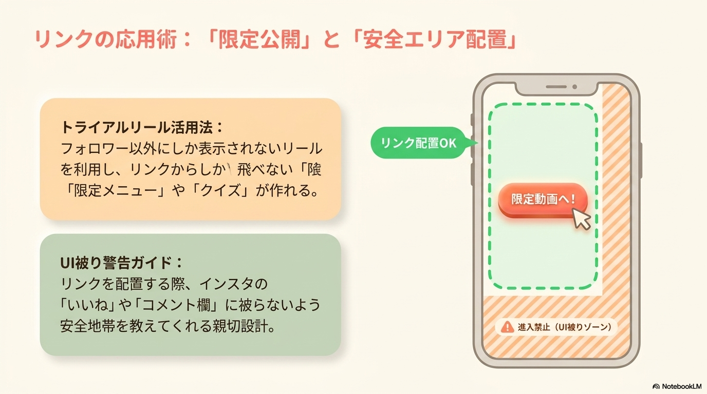
リテンション（維持率グラフ）：何秒の時点でスワイプされたかが秒単位でグラフ化されます。
Editsの分析タブはInstagram標準のインサイトより圧倒的に詳細なデータを無料で確認できます。
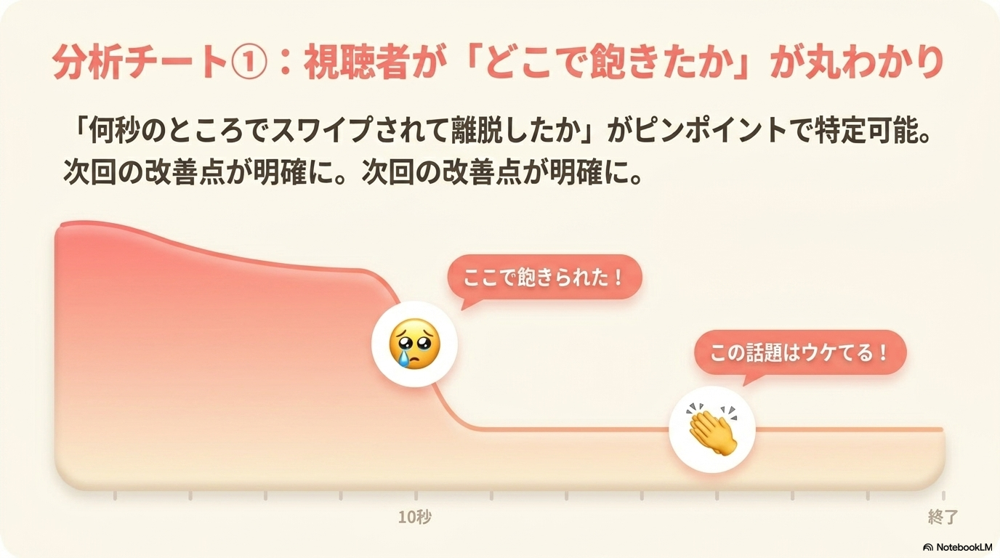
インスピレーションタブ：今バズっているリールの具体的な数値（シェア率・保存数・再生数）を覗き見できます。
付箋機能：気になった投稿の音源・構成・フックをその場でメモ保存。次のリール制作に即活用できます。
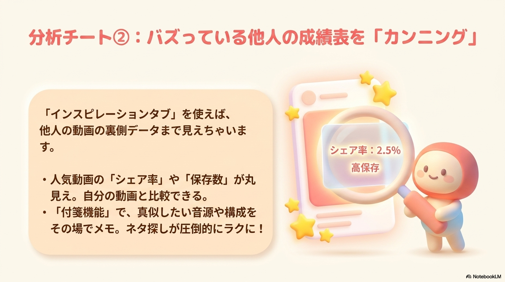
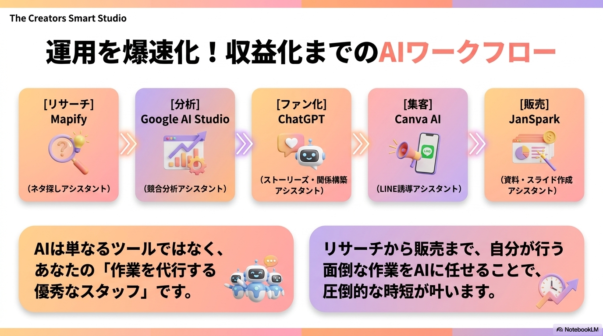
AIは「単なるツール」ではなく、あなたの作業を代行する優秀なスタッフです。
リサーチから販売まで、自分が行う創造的な作業だけに集中し、圧倒的な時間短縮が可能になります。
YouTubeのURLを貼るだけで、長尺動画の専門知識・ノウハウをマインドマップ形式で一瞬に要約・整理します。
30分の動画でも数分で要点が把握でき、リールの有益なネタ探しを爆速化できます。
Chrome拡張機能で使えるため、いつもの動画視聴ページからそのまま起動可能です。
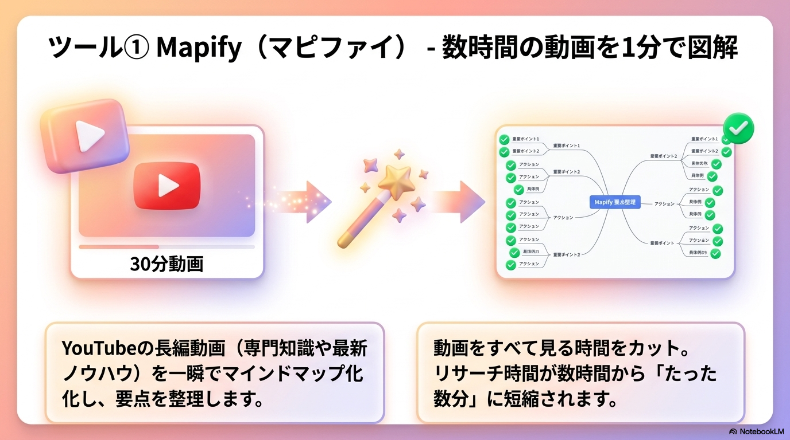
競合アカウントの伸びているリール動画をURLごと渡すだけで、AIが自動で文字起こし（英語の動画も含む）して内容を分析してくれます。
グラウンディング機能：Google検索の最新情報を参照しながら回答するため、AIが古い知識やハルシネーション（誤情報）を答えるリスクをゼロに近づけます。
競合が「なぜバズったか」の構成・フック・ワードを即解析し、自分のリール制作に応用できます。
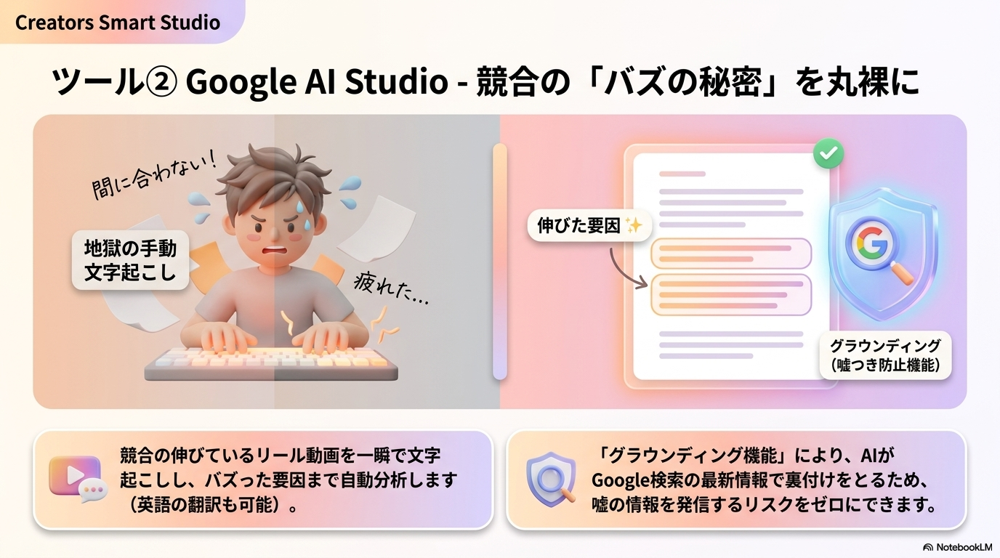
インスタで最も直販が難しい理由：「購買は個人向けDMやLINEに誘導する必要がある」ことです。
診断テストの活用：「あなたのタイプは？」形式の選択式テストはワンタップから始まる気軽さで回答率95%という驚異的な数字を実現した事例もあります。
Canva AIを使えば、こうした診断テストをたった10分で複数パターン自動生成。デザインスキル不要でプロ品質の見た目を実現し、LINEへの誘導を加速させます。
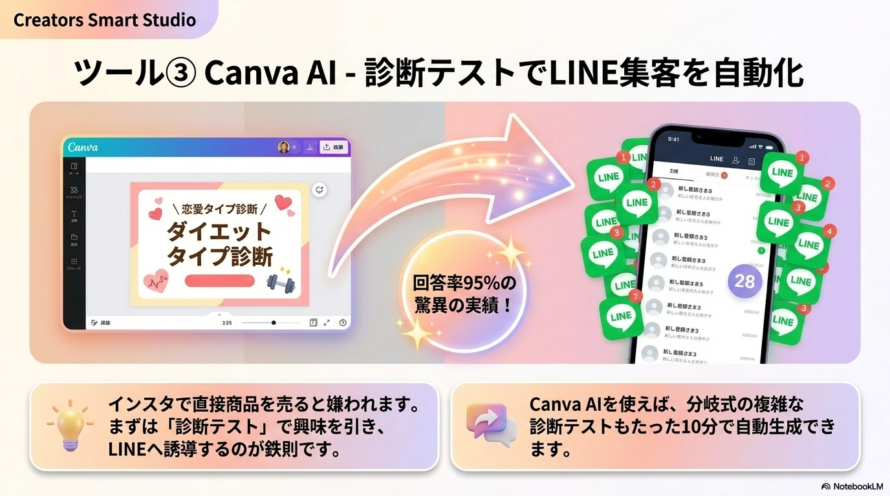
ストーリーズはあなたに興味がある「熱いファン」だけが見る最重要の接点です。
ChatGPTに「40代女性向け、1週間のストーリーズ案をカレンダー形式で出して」と指示するだけで、月〜日分の投稿ネタ・PR配置・繋がり施策まで一括生成されます。
LINEで登録した特典PDFや、商品を提案するためのセールス資料作りにも最適。毎日のネタ切れをゼロにします。
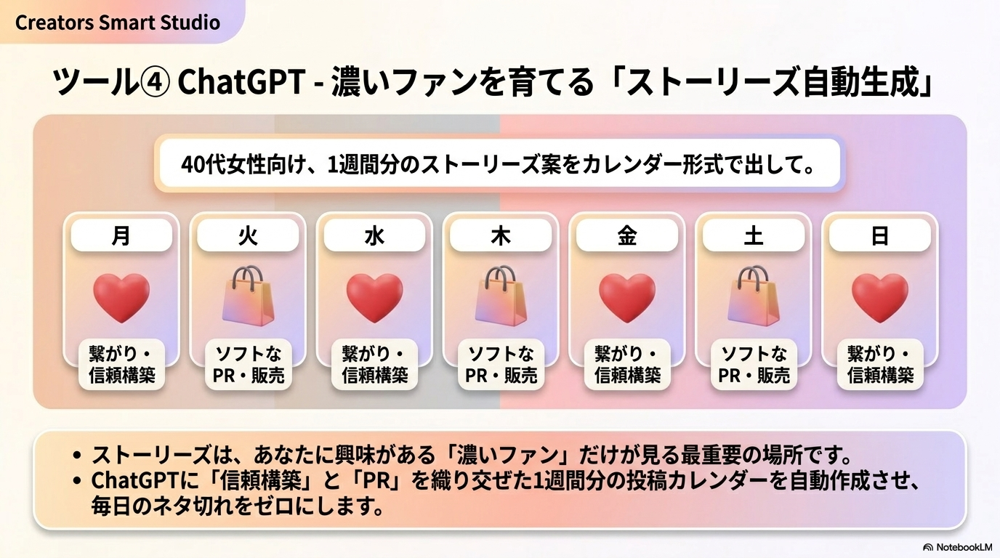
ChatGPTで作った文章・構成テキストをコピペするだけで、JanSparkのAIエンジンが美しくプロフェッショナルなスライド資料を数秒で完成させます。
LINEへの誘導特典PDF・商品販売のセールス資料・リールの台本スライドなど、あらゆる資料をデザインセンスなしで量産できます。
ChatGPT（文章）× JanSpark（デザイン）の組み合わせが最強の資料作成コンビです。
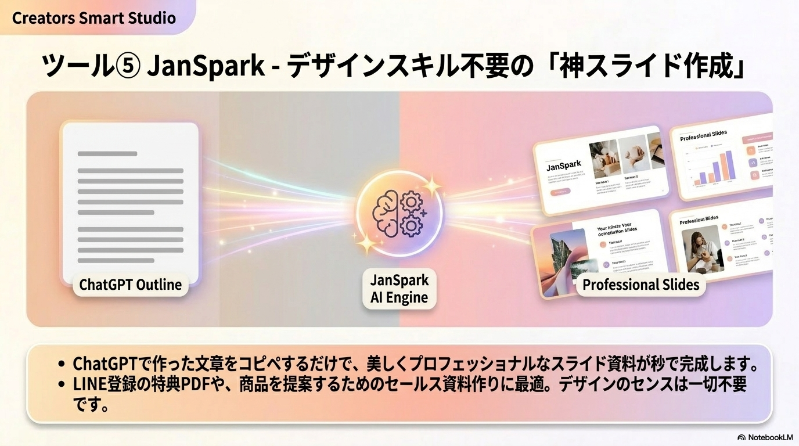
これまでのAIは「指示を出すと1回答える」もの。Manusは違います。
Model Context Protocol（MCP）を介してInstagramビジネスアカウントと直接連携し、指示を出さなくても自律的に動くAIエージェントです。
プロフィール情報・過去20件の投稿データ・インサイト指標の自動取得から、投稿・ストーリー・リールの下書き自動生成まで実行できます。
クリエイターの「作業」という概念が根本から覆される時代に突入しています。
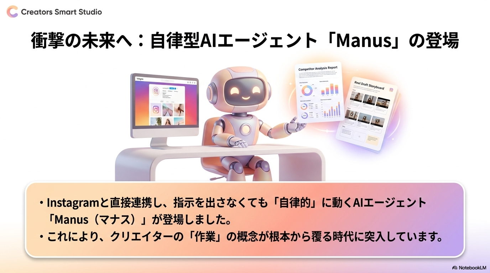
分析：競合アカウントのURLを渡すだけで、過去20件の投稿データを瞬時に読み込み、コンテンツ比率・エンゲージメント・強みと改善点を網羅した詳細レポートを爆速生成します。
生成：「レシピ系で30投稿以内・フォロワー5万超」といった高度な条件でバズアカウントを自動探索し、伸びている構成を学習してリール動画の台本・画像構成の下書きまで自動生成します。
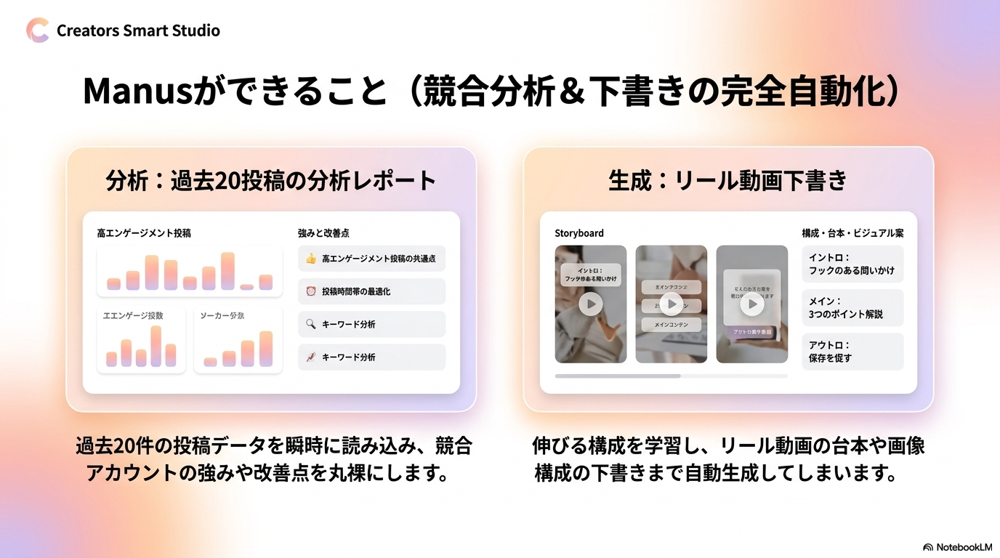
AIが脅威になる部分：ノウハウ・情報発信・テンプレート的なコンテンツ → AIによる超高速なパクリ動画生成が一般化し、ネット上にはAI生成の類似コンテンツが溢れかえります。
人間にしかできない部分：
ツールで武装したうえで、「あなたにしか語れないリアル」を発信することが最大の競争優位になります。
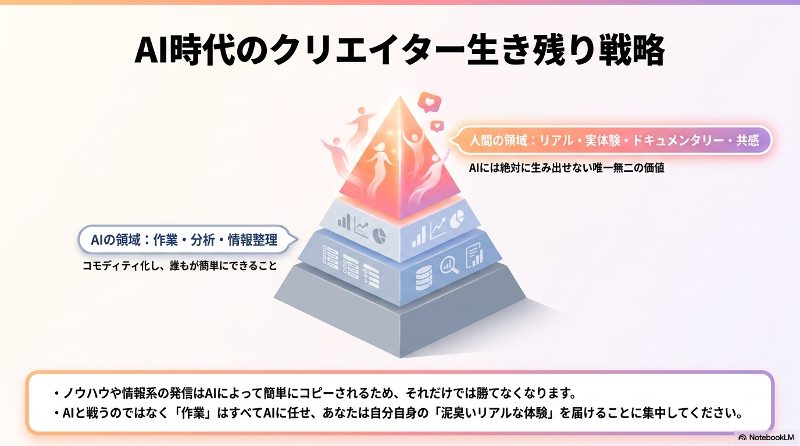
【実習】 ツールを実際に触りながら、以下4項目をメモしましょう。
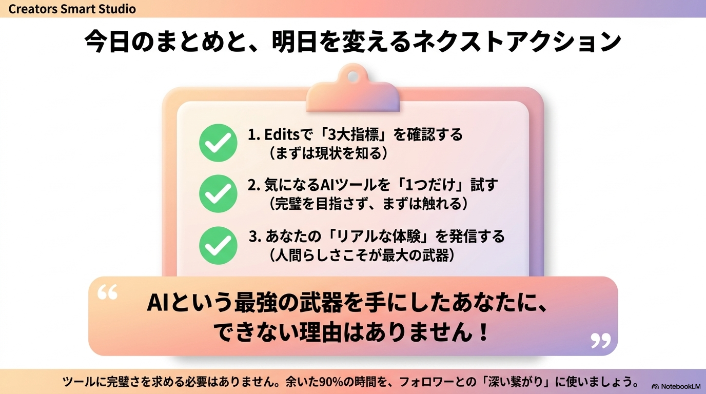